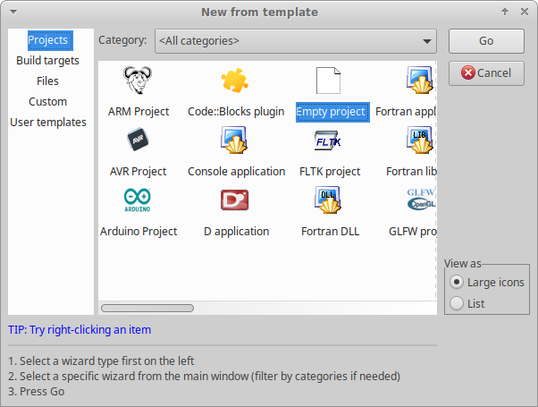
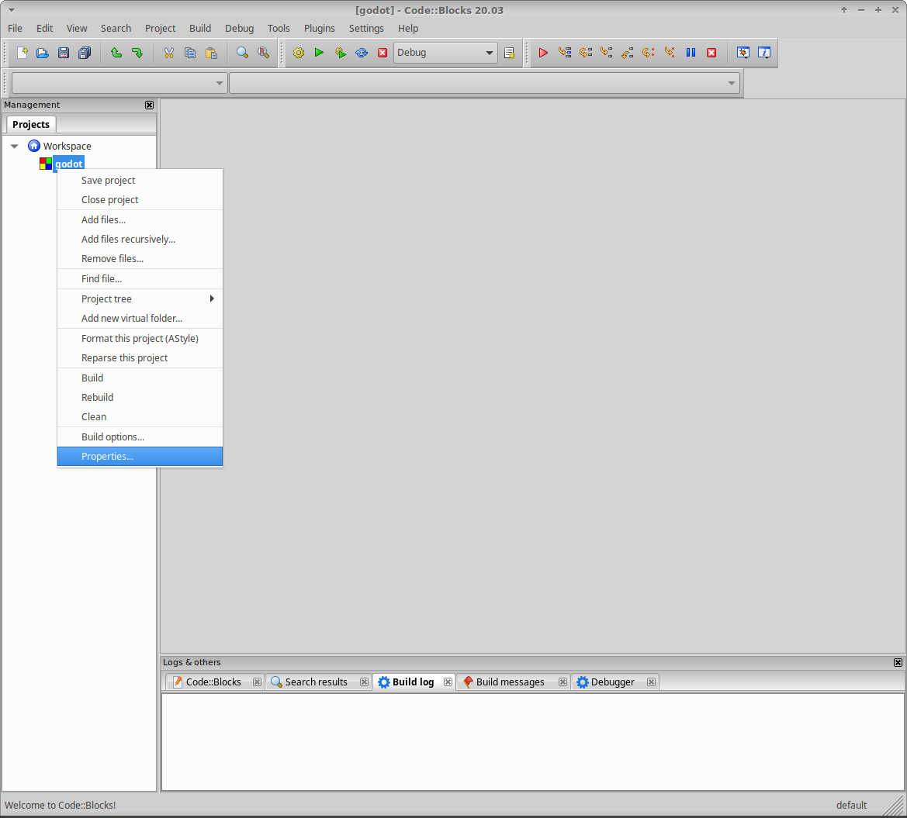
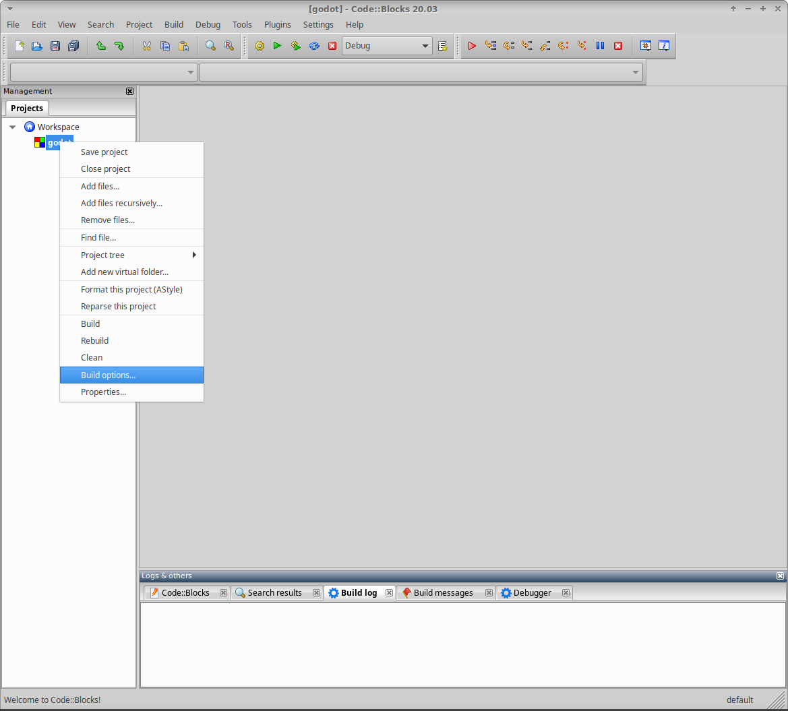
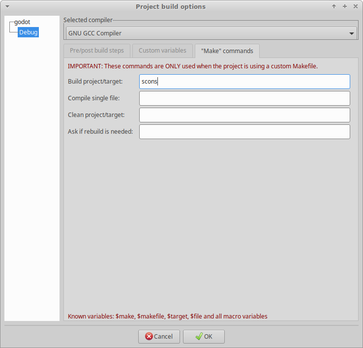
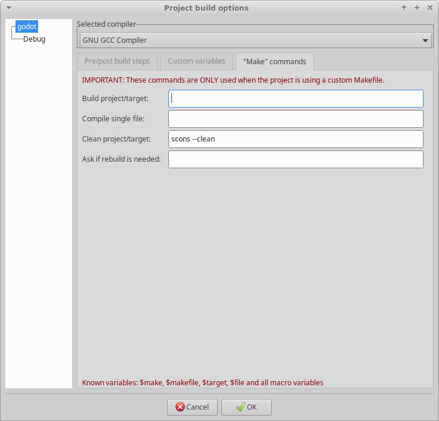
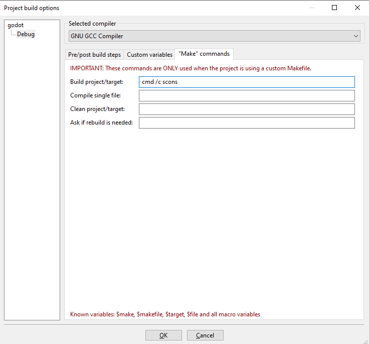
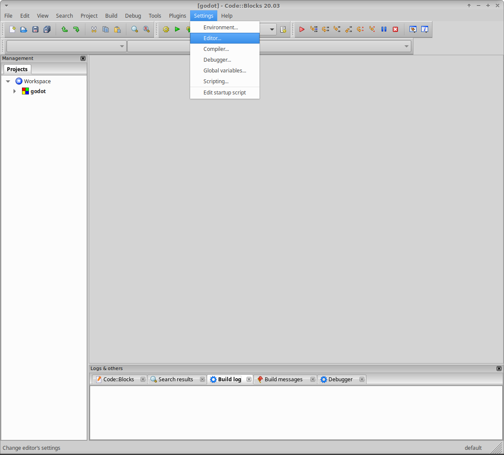
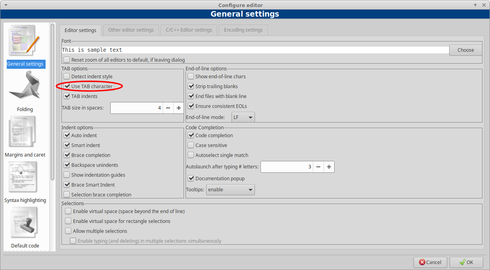

Code::Blocks
Code::Blocks là một IDE miễn phí, mã nguồn mở và đa nền tảng.
Tạo dự án mới
Từ màn hình chính của Code::Blocks, nhấp Create a new project hoặc chọn File > New > Project....

Trong cửa sổ New from template, từ Projects, chọn Empty project và nhấp Go.

Nhấp Next để bỏ qua màn hình chào mừng của trình hướng dẫn tạo dự án trống mới.

Tệp dự án cần được tạo ở thư mục gốc của thư mục dự án đã clone. Để làm vậy, trước tiên hãy đảm bảo Project title trùng với tên thư mục mà Godot được clone vào. Trừ khi bạn clone dự án vào một thư mục có tên khác, tên này sẽ là godot.
Thứ hai, hãy đảm bảo Folder to create project in là thư mục nơi bạn đã chạy lệnh Git clone, không phải thư mục dự án godot. Xác nhận rằng trường Resulting filename sẽ tạo tệp dự án ở thư mục gốc của thư mục dự án đã clone.

Các cài đặt trình biên dịch và cấu hình được quản lý qua SCons và sẽ được cấu hình sau. Tuy nhiên, nên bỏ chọn tùy chọn Create "Release" configuration để chỉ một build target duy nhất được tạo trước khi nhấp Finish.

Cấu hình build
Bước đầu tiên là thay đổi thuộc tính dự án. Nhấp chuột phải vào dự án mới và chọn Properties....

Đánh dấu thuộc tính This is a custom Makefile. Nhấp OK để lưu thay đổi.

Bước tiếp theo là thay đổi tùy chọn build. Nhấp chuột phải vào dự án mới và chọn Build Options....

Chọn tab "Make" commands và xóa mọi lệnh hiện có của tất cả build target. Với mỗi build target, hãy nhập lệnh SCons để tạo bản build mong muốn vào trường Build project/target. Tối thiểu là scons. Để biết chi tiết về các tùy chọn build SCons, xem Giới thiệu về hệ thống build. Cũng nên thêm lệnh scons --clean vào trường Clean project/target trong các lệnh mặc định của dự án.
Nếu bạn dùng Windows, mọi lệnh đều cần có tiền tố cmd /c để khởi tạo trình thông dịch lệnh.


Ví dụ trên Windows:

Giờ Code::Blocks đã được cấu hình để build Godot; vì vậy hãy chọn Build > Build, nhấp nút bánh răng, hoặc nhấn Ctrl + F9.
Cấu hình chạy
Sau khi SCons đã build thành công target mong muốn, hãy mở lại Properties... của dự án và chọn tab Build targets. Trong trường Output filename, duyệt đến thư mục bin và chọn tệp đã biên dịch.
Bỏ chọn các tùy chọn Auto-generate filename prefix và Auto-generate filename extension.

Giờ Code::Blocks đã được cấu hình để chạy tệp thực thi Godot bạn đã biên dịch; vì vậy hãy chọn Build > Run, nhấp nút mũi tên màu xanh lá, hoặc nhấn Ctrl + F10.
Có hai điểm bổ sung đáng lưu ý. Thứ nhất, nếu cần, bạn có thể dùng trường Execution working dir để kiểm thử các dự án cụ thể bằng cách đặt nó thành thư mục chứa tệp project.godot. Thứ hai, bạn có thể dùng tab Build targets để thêm và xóa các build target nhằm làm việc với và tạo ra các bản build khác nhau.
Thêm file vào dự án
Để thêm toàn bộ tệp mã nguồn của Godot vào dự án, nhấp chuột phải vào dự án mới và chọn Add files recursively....

Nó sẽ tự động chọn thư mục dự án; vì vậy chỉ cần nhấp Open. Theo mặc định, tất cả tệp mã nguồn đều được bao gồm, nên chỉ cần nhấp OK.

Cấu hình code style
Trước khi chỉnh sửa bất kỳ tệp nào, hãy nhớ rằng mọi mã nguồn đều phải tuân theo hướng dẫn code style. Một khác biệt quan trọng với Godot là việc dùng tab để thụt lề. Do đó, cài đặt mặc định quan trọng nhất cần thay đổi trong Code::Blocks là bật dùng tab để thụt lề. Bạn có thể tìm cài đặt này bằng cách chọn Settings > Editor.

Trong General Settings, ở tab Editor Settings, mục Tab Options, hãy đánh dấu Use TAB character.

Vậy là xong. Bạn đã sẵn sàng đóng góp cho Godot bằng IDE Code::Blocks. Hãy nhớ lưu tệp dự án và Workspace. Nếu gặp vấn đề, hãy nhờ trợ giúp tại một trong các kênh cộng đồng của Godot.